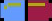
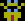
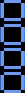
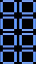

Home

Here's all the terminology that you will need.
| Pill | A 2x1 grouping of colour that eliminate viruses. Every half can be Red, Blue, or Yellow - and Green, Magenta, Cyan in the newer games. |  |
|---|---|---|
| Pill Segment | One half of a pill |  |
| Half Pill/Sub Pill | 1x1 pill that broke off of the main pill for clearing a line. |  |
| Virus | Red, Blue, Yellow, Green, Magenta, and Cyan tiles that appear at the start of the game. Eliminate all of them to complete the Level. |  |
| Line Clear | When 4+ Pill Segments / 4 virus & pills come into contact and they disappear. |  |
| Combo | Extra points / extra garbage sent (In multi-player) for clearing 2+ lines with one pill, either at once or after a half pill falls and clears another line. |  |
| Garbage | Half Pills that drop from the top of the screen when your opponent combos. |  |